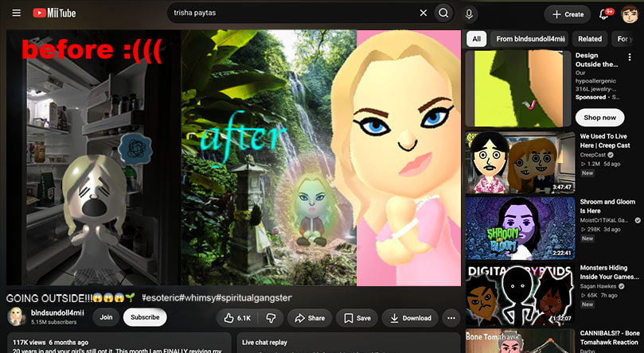

Meme mashup
edited this entire image none of this is real. don't believe shit you see on the internet.

I used roughly 3 screen shots of you tube and composited them into one "blank" then i edited mii's (using the website mii.nxw.pw to create them) over each of the thumbnails i edited the lighting and the coloring to best fit the real thumbnails.Over all i think this took me somewhere around 12ish hours.
the pice represents the parasocial nature of the internet and the way a lot of internet celebrity almost play into that fact. Recently (as of 2026) a game called tomodachi life came out in it you can make character and they live out there life but, you can alter with like a disembodied hand. this feels like chat in online streams and stuff kinda altering the life of kinda fictional personas.